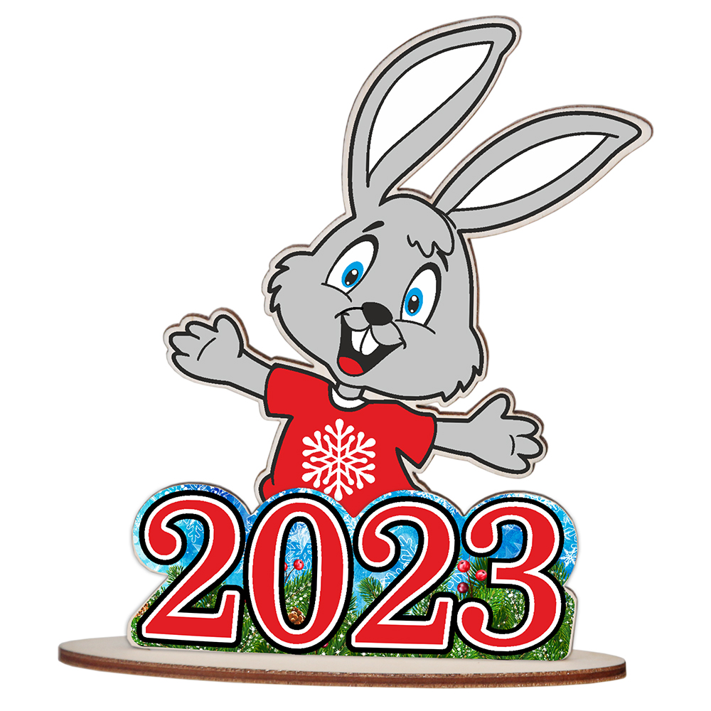

Happy
New Year
Время сквозь пальцы песком утекает,
Буднями мчатся недели, года!
Привычный уклад зимний праздник меняет,
Когда вокруг ёлки, огни, суета!
Так пусть в эти дни волшебство приключится,
Магия праздничных, радостных дней!
И сказка к вам в дверь в тот же миг постучится,
Желания ваши исполнив скорей!
Read More

Символ года
Кролик в китайской астрологии символизирует терпение и удачу, мир и спокойствие. Он приземляет тех,
кто слишком сильно витает в облаках, дает понимание дальнейших действий. Год Черного Водяного
Кролика (Кота) обещает принести покой в политическую и экономическую обстановку. В Китайской
мифологии заяц напрямую связан с Луной и светом: он символизирует добро, чистоту, дает надежду.
Согласно китайскому гороскопу 2023 года, Год Кролика станет хорошим временем для всех знаков зодиака
и чрезвычайно удачным годом для большинства из них! Все знаки будут успешны в любви, большинство
людей сможет продвинуться в работе, предпринимательских начинаниях.